Sentinel-1 홍수 탐지 — Edge-Otsu 수체 변화 + KuroSiwo 검증Sentinel-1 Flood Mapping — Edge-Otsu Water Change with KuroSiwo Validation
Sentinel-1 GRD 사전·사후 영상에서 Edge-Otsu로 수체를 분리하고 차이로 침수(GAIN)·퇴수(LOSS)를 산출하는 비지도 파이프라인을 만들어 텔레픽스 SatCHAT 홍수 모듈로 정리했다. 진주(2025.7)·필리핀 카가얀(2025.9)·태국 남부(2025.11)·고흥(2024.5)에 적용했고, 공개 벤치마크 KuroSiwo 67타일에서 사후 수체 F1 0.905(VV)를 재계산으로 확인했다.Built an unsupervised pipeline that separates water from Sentinel-1 GRD pre/post images with Edge-Otsu and derives newly flooded (GAIN) and receded (LOSS) areas, packaged as the flood module of Telepix's SatCHAT service. Applied to Jinju, Korea (Jul 2025), Cagayan, Philippines (Sep 2025), southern Thailand (Nov 2025) and Goheung (May 2024); on 67 tiles of the public KuroSiwo benchmark the post-event water F1 is 0.905 (VV), recomputed from the masks.
배경 · 목표Background
- 홍수 직후 광학 영상은 구름으로 막히는 경우가 많아, 구름과 무관한 SAR로 침수 범위를 빠르게 내는 기능이 필요했다.
- 학습 라벨이 없는 지역·사건에도 바로 돌아가야 해서 지도학습 대신 임계값 기반 비지도 방법을 택했다.
- 결과물은 텔레픽스 SatCHAT 서비스의 홍수 모듈(전처리된 dB GeoTIFF 입력 → 수체·변화 마스크·면적 통계)로 들어간다.
- Optical imagery right after a flood is often cloud-blocked; a SAR-based flood extent that ignores clouds was needed.
- It had to run on any region or event without training labels, so a threshold-based unsupervised method was chosen over supervised segmentation.
- The output feeds the flood module of Telepix's SatCHAT service (preprocessed dB GeoTIFF in → water/change masks and area statistics out).
방법Method
- 전처리(SNAP): 궤도 보정 → 열잡음·GRD 경계잡음 제거 → σ⁰ 보정 → Lee-sigma 필터 → 지형보정 10 m → dB 변환.
- Edge-Otsu: −20 dB 초기 후보의 경계(팽창−침식)에 5화소 버퍼를 주고, 그 안 화소만으로 Otsu 임계 산출 → 물·육지가 섞인 표본이라 히스토그램이 이봉형이 됨(진주 07-19: 임계 −15.9 dB).
- 경사 마스크: Copernicus DEM 30 m 타일 자동 다운로드 → UTM에서 경사 계산 → 경사 ≥ 5° 는 육지로 강제(산 그림자 오탐 억제).
- 변화 탐지: 두 영상을 유효 데이터 공통 영역으로 정렬 → 사후&~사전 = GAIN, 사전&~사후 = LOSS → 화소면적(위도 보정)으로 km² 집계.
- 검증: KuroSiwo AOI 08(호주 리즈모어 2022.2 홍수) 67타일 224×224 에 같은 방법을 VV·VH 각각 적용, 전문가 라벨(0 비수체·1 영구수체·2 홍수·3 무효)과 화소 단위 P/R/F1/IoU 비교. 놓친 화소의 후방산란 분포를 따로 분석.
- JRC 영구수체 마스크를 차분해 상시 수체와 신규 침수를 구분했다(로컬 파이프라인 s1_processor 계열).
- DEM과 결합해 침수심을 추정하고 등급화했다 — 탐지 면적만으로는 피해 규모를 가늠할 수 없기 때문.
- Preprocessing (SNAP): orbit file → thermal and GRD border noise removal → σ⁰ calibration → Lee-sigma filter → terrain correction at 10 m → dB.
- Edge-Otsu: buffer the morphological boundary of a −20 dB seed mask by 5 px and compute Otsu only on those pixels; the mixed land/water sample makes the histogram bimodal (Jinju 2025-07-19: threshold −15.9 dB).
- Slope mask: auto-download Copernicus DEM 30 m tiles, compute slope in UTM, force slope ≥ 5° to dry land to suppress mountain-shadow false water.
- Change: clip both images to their common valid footprint; post & ~pre = GAIN, pre & ~post = LOSS; area in km² with latitude-corrected pixel area.
- Validation: the same method run on 67 KuroSiwo tiles (AOI 08, Lismore, Australia, Feb 2022 flood; 224 × 224 px) for VV and VH, compared pixel-wise with expert labels (0 dry, 1 permanent water, 2 flood, 3 invalid) for P/R/F1/IoU; backscatter of missed pixels analysed separately.
- Subtracted the JRC permanent-water mask to separate standing water from new inundation (local s1_processor line).
- Estimated and classified flood depth by combining the mask with a DEM — detected area alone says little about damage.
결과Results
- KuroSiwo 67타일(무효 화소 제외, 화소 합산): 사후 수체 F1 VV 0.905 / VH 0.926, IoU 0.827 / 0.862. 정밀도는 0.998 / 0.992로 매우 높고 재현율이 0.828 / 0.868로 한계.
- 홍수만(GAIN vs 홍수 라벨): F1 VV 0.880 / VH 0.810. 사전 영상 vs 영구수체: VV 0.936, VH 0.647(VH 사전영상에서 정밀도 0.50 — 오탐 다수).
- 놓친 수체(FN, VV)의 사후 후방산란 중앙값 −15.1 dB(탐지된 물 −23.6 dB). 13%는 −12 dB보다 밝음 → 침수 식생·시가지처럼 '어둡지 않은 물'은 임계값으로 못 잡음.
- 진주(2025-07-12→07-19, AOI 4,897 km²): 수체 75.3 → 107.4 km², GAIN 44.7 km², LOSS 12.5 km². 남강 하류·합류부를 따라 띠 모양 침수.
- 필리핀 카가얀(S1C 2025-09-12→09-24): 수체 129.1 → 174.9 km², GAIN 55.0 km². 태국 남부(2025-11-11→11-23, 전 장면): GAIN 357.6 km², LOSS 45.1 km². 고흥(15 km² 소구역, 2024-04-24→05-06): GAIN 0.94 km².
- 같은 진주 장면을 세 번 돌린 결과가 서로 달랐다: 순 수체 변화 +32.1(10/24 실행) / −0.5(11/04 SNAP 체인, EPSG:3857) / −14.1 km²(11/05 배치). 처리 경로(입력 스케일·경사 마스크·투영) 차이가 결론의 부호까지 바꿨다.
- 로컬 파이프라인(s1_processor v3→v8)으로 브라질·인도네시아 발리·부탄·멕시코·인도까지 추가 검증. Copernicus EMS 공식 활성화 지도와도 대조했다.
- KuroSiwo, 67 tiles (invalid pixels excluded, pooled): post-event water F1 0.905 VV / 0.926 VH, IoU 0.827 / 0.862. Precision is very high (0.998 / 0.992); recall (0.828 / 0.868) is the limit.
- Flood only (GAIN vs flood label): F1 0.880 VV / 0.810 VH. Pre-event mask vs permanent water: 0.936 VV but 0.647 VH (precision 0.50 — many false positives in the VH pre-image).
- Missed water (FN, VV) has a median post-event backscatter of −15.1 dB versus −23.6 dB for detected water; 13% are brighter than −12 dB — 'non-dark water' such as flooded vegetation or built-up areas is out of reach for a threshold.
- Jinju (2025-07-12 → 07-19, AOI 4,897 km²): water 75.3 → 107.4 km², GAIN 44.7 km², LOSS 12.5 km², banded along the lower Nam River and its confluences.
- Cagayan, Philippines (S1C 2025-09-12 → 09-24): water 129.1 → 174.9 km², GAIN 55.0 km². Southern Thailand (2025-11-11 → 11-23, full scene): GAIN 357.6 km², LOSS 45.1 km². Goheung (15 km² AOI, 2024-04-24 → 05-06): GAIN 0.94 km².
- Three runs on the same Jinju scene disagreed: net water change +32.1 (24 Oct run) / −0.5 (4 Nov SNAP chain, EPSG:3857) / −14.1 km² (5 Nov batch). Processing path (input scaling, slope mask, projection) flipped even the sign of the conclusion.
- The local pipeline (s1_processor v3→v8) additionally covered Brazil, Bali, Bhutan, Mexico and India, cross-checked against official Copernicus EMS activation maps.

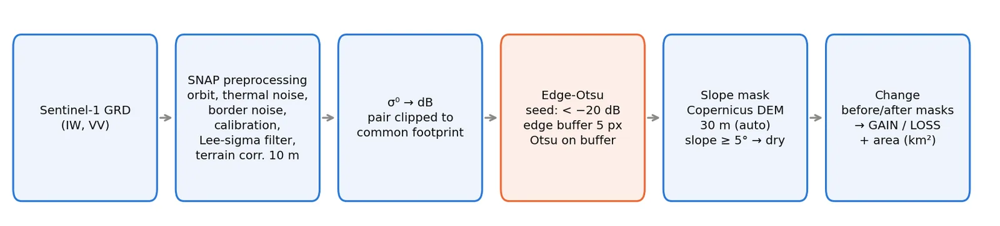
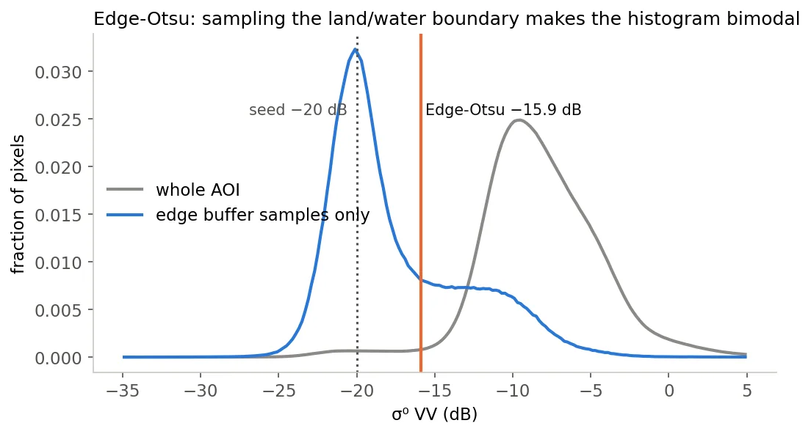
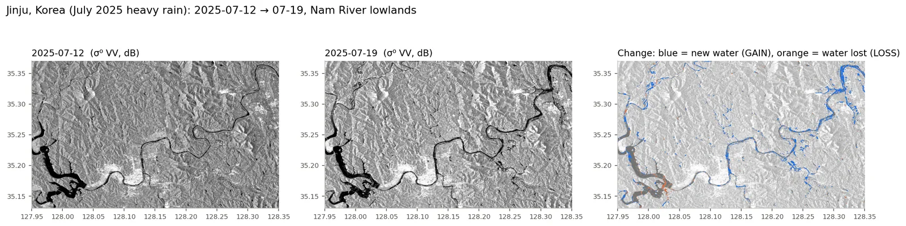
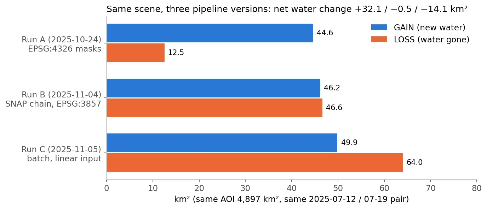
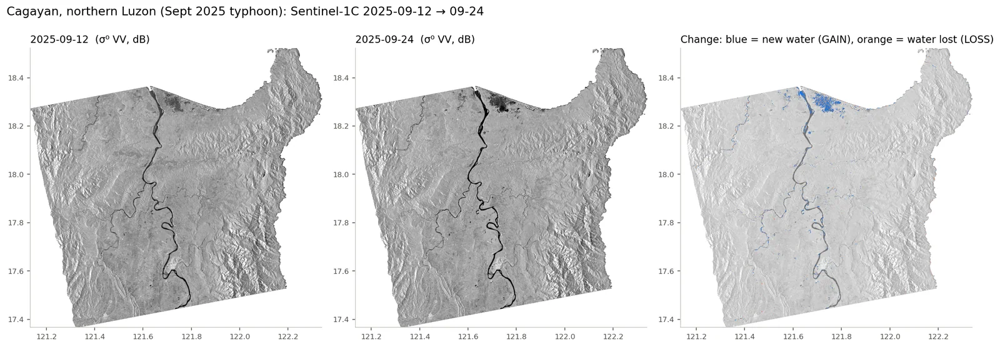
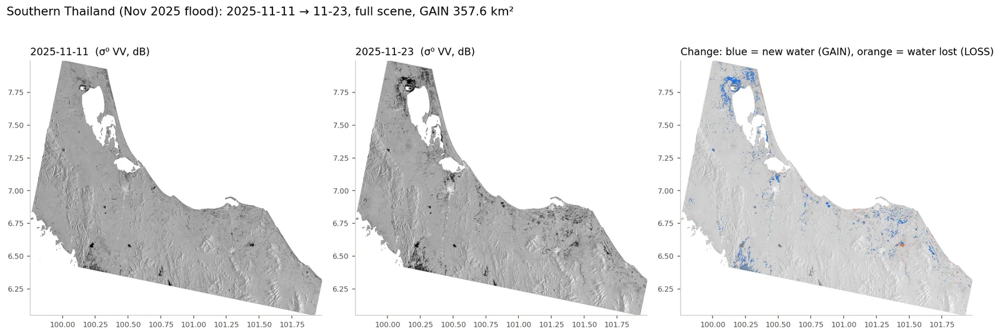
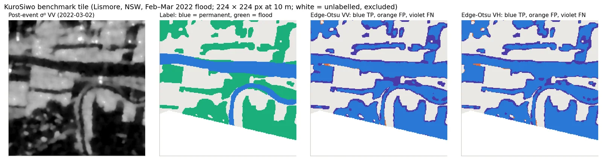
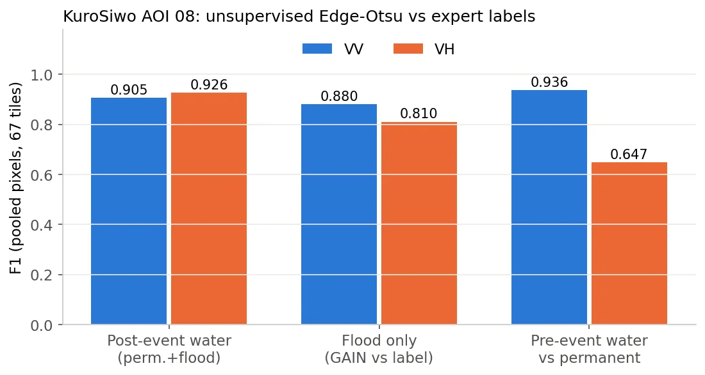
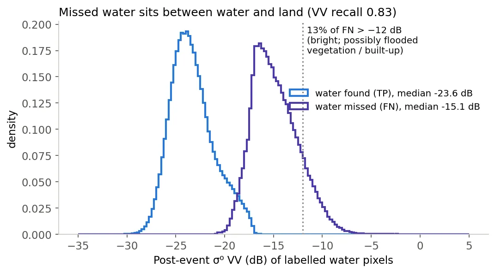
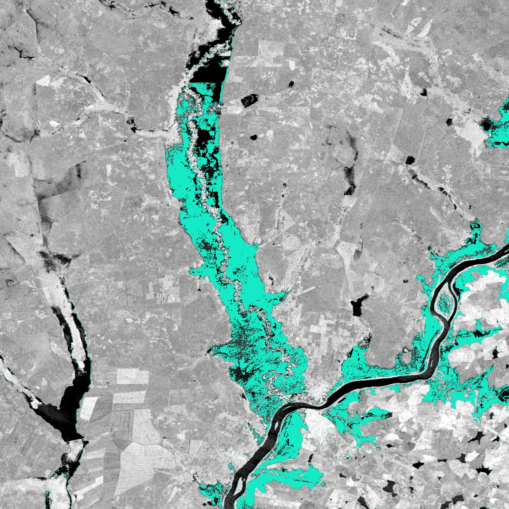

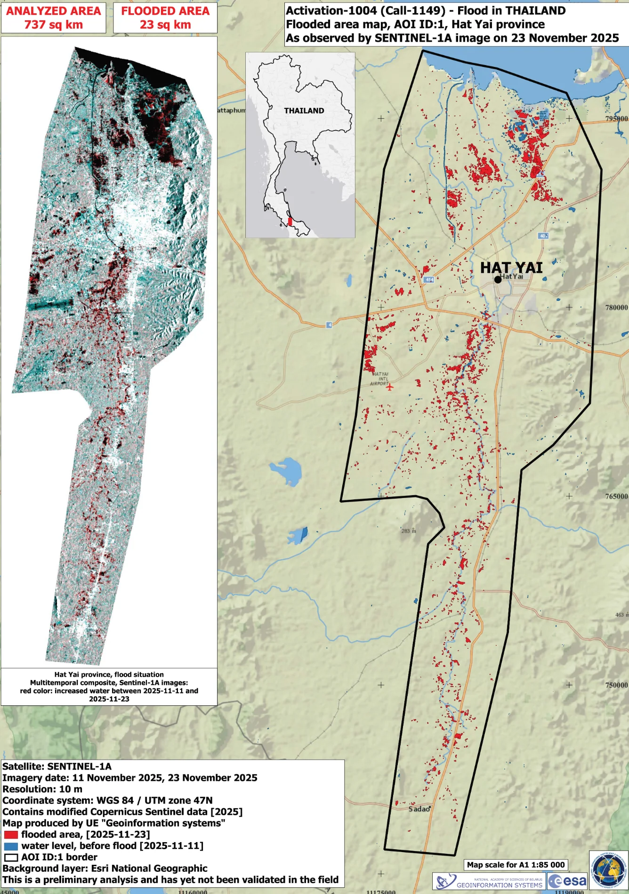

배운 점 · 한계What I learned · Limitations
- Edge-Otsu는 '경계 표본'으로 이봉형을 만들어 내는 게 핵심 — 전체 히스토그램은 육지가 압도해 Otsu가 의미 없는 임계를 낸다.
- 정밀도 0.99대·재현율 0.83: 임계값 방식은 '확실히 어두운 물'만 잡는다. 놓친 물의 중앙값이 −15.1 dB로 물과 육지 사이에 있다.
- 한계: 도시 침수에서는 건물-수면 이중산란으로 후방산란이 오히려 높아져 미탐지가 남았다. 진주 시가지 중심부에는 GAIN이 거의 없다. 이 문제는 해결하지 못했다(현장 침수 자료로 정량 검증도 못 함).
- EPSG:3857 출력의 '10 m 화소'는 위도 35.5°에서 실제 8.1 m — 면적을 화소×100 m²로 세면 1.51배 과대. 면적은 등적/위도 보정 필수.
- 같은 장면을 처리 경로만 바꿔 돌렸을 때 순변화 +32 ~ −14 km²로 갈렸다. 산악지가 많은 AOI에서는 경사 마스크·입력 스케일이 결과를 지배한다 — 버전·설정을 결과와 함께 기록해야 한다(이번엔 어느 실행에 어떤 설정이 쓰였는지 일부만 확인 가능).
- before/after를 파일 수정시각으로 정렬하는 코드는 재처리 순서에 따라 GAIN/LOSS가 뒤집힐 수 있다 → 파일명 날짜로 정렬하도록 바꿈(SatCHAT판).
- The key of Edge-Otsu is the boundary sample that makes the histogram bimodal; on the whole image land dominates and Otsu returns a meaningless threshold.
- Precision ~0.99 with recall 0.83: a threshold only catches clearly dark water. Missed water has a median of −15.1 dB, between water and land.
- Limitation: in urban flooding, building–water double bounce raises backscatter, so floods there stay undetected; central Jinju shows almost no GAIN. This was not solved (and not quantitatively validated against field flood records).
- '10 m pixels' in EPSG:3857 are 8.1 m on the ground at 35.5°N — counting pixels × 100 m² overstates area by 1.51×. Use equal-area or latitude-corrected areas.
- Re-running the same scene with different processing paths gave net change from +32 to −14 km². In mountainous AOIs the slope mask and input scaling dominate the result; versions and settings must be stored with outputs (here only partly recoverable).
- Code that orders before/after by file modification time can swap GAIN and LOSS depending on processing order; the SatCHAT version orders by the date in the filename.
산출물Deliverables
- 수체 마스크·GAIN/LOSS GeoTIFF (진주·필리핀·태국·고흥)
- 면적 통계 txt (SatCHAT 모듈 출력)
- KuroSiwo VV/VH 67타일 수체 마스크 + 평가 스크립트
- SatCHAT 홍수 모듈 코드 (SNAP 비의존판)
- s1_processor v3–v8 코드 시리즈
- Water masks and GAIN/LOSS GeoTIFFs (Jinju, Philippines, Thailand, Goheung)
- Area statistics text output (SatCHAT module)
- KuroSiwo VV/VH water masks for 67 tiles + evaluation script
- SatCHAT flood module code (SNAP-free version)
- s1_processor v3–v8 code series
원본 보고서와 발표자료는 사내 자료로 공개하지 않습니다. 분석 코드는 GitHub에 정리되어 있습니다.Source reports and decks are internal and not published here. Analysis code is organised on GitHub.